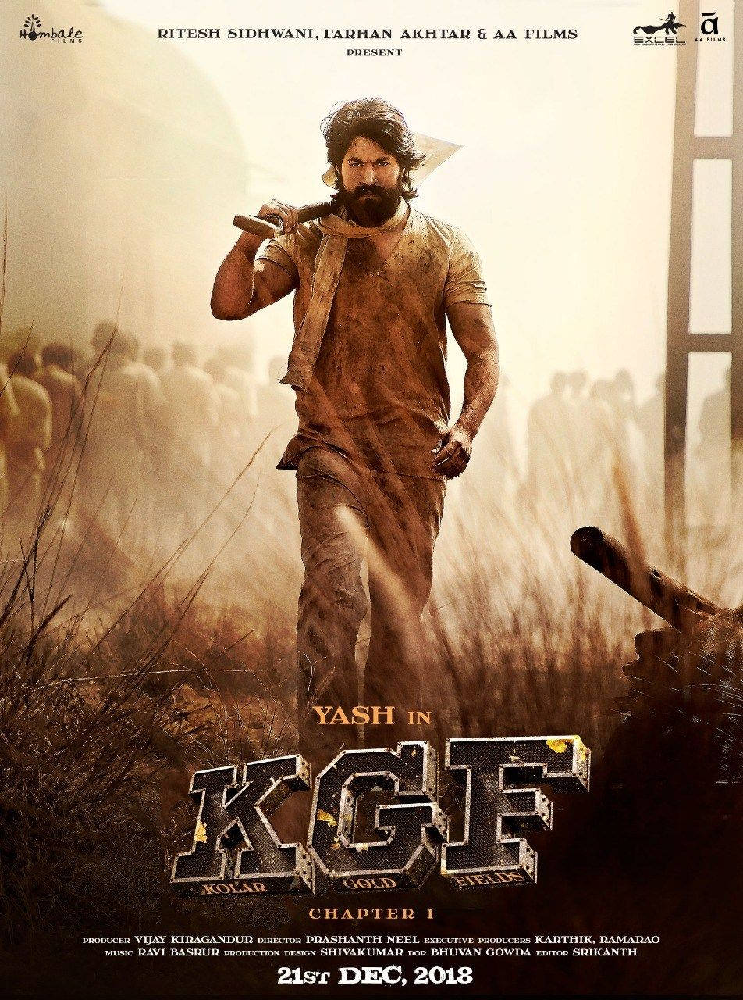

Salaar: Part 1 – Ceasefire is a 2023 Indian Telugu-language epic action thriller film directed by Prashanth Neel and produced by Vijay Kiragandur under Hombale Films. The film stars Prabhas in the titular role, alongside Prithviraj Sukumaran, Shruti Haasan, Jagapathi Babu, Bobby Simha, Sriya Reddy, Ramachandra Raju, John Vijay, Easwari Rao, Tinnu Anand, Devaraj, Brahmaji and Mime Gopi. In the fictional dystopian city-state of Khansaar, where monarchy still exists, the film follows the friendship between Deva (Prabhas), the exiled prince of Khansaar, and Varadha (Prithviraj Sukumaran), the current prince of Khansaar. When a coup d'état is planned by his father's ministers and his relatives, Varadha enlists Deva's help to become Khansaar's undisputed ruler

KGF: Chapter 1 is a 2018 Indian Kannada-language period action film[5] written and directed by Prashanth Neel, and produced by Vijay Kiragandur under the banner of Hombale Films. It is the first installment in the KGF series, followed by KGF: Chapter 2. The film stars Yash, Srinidhi Shetty, Vasishta N. Simha, Ramachandra Raju, Archana Jois, Anant Nag, Achyuth Kumar, Malavika Avinash, T. S. Nagabharana and B. Suresha. Filmed on a budget of ₹80 crore (equivalent to ₹107 crore or US$13 million in 2023), it was the most expensive Kannada film at the time of its release.[2] In the film, Rocky, a high-ranking mercenary, working for a prominent gold mafia in Bombay, seeks power and wealth in order to fulfill his mother's promise. Due to his high fame, the leaders of the gold mafia where he works hire him to assassinate Garuda, the son of the founder of Kolar Gold Fields

Pushpa: The Rise (Telugu pronunciation: [puʂpa]) is a 2021 Indian Telugu-language action drama film directed by Sukumar and produced by Mythri Movie Makers, together with Muttamsetty Media. The first installment in the Pushpa film series, it stars Allu Arjun in the titular role, alongside an ensemble cast of Shatru, Rashmika Mandanna, Fahadh Faasil (in his Telugu debut), Jagadeesh Prathap Bandari, Dhananjaya, Sunil, Anasuya Bharadwaj, Rao Ramesh, Ajay and Ajay Ghosh. The film follows Pushpa, a daily wage labourer who rises through the ranks of a syndicate involved in smuggling red sandalwood, a rare wood found only in the Seshachalam Hills of Andhra Pradesh.